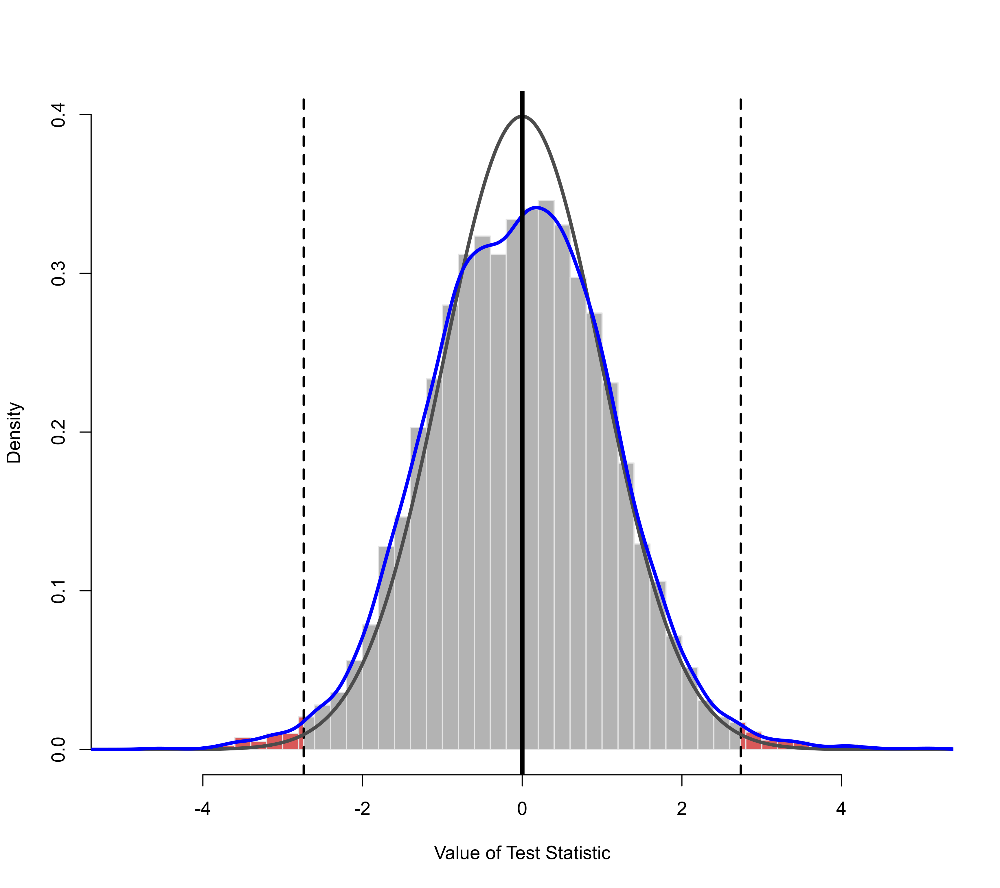

Permutation Tests for 'rma.uni' Objects
permutest.RdThe function carries out permutation tests for objects of class "rma.uni".
Usage
permutest(x, ...)
# S3 method for rma.uni
permutest(x, exact=FALSE, iter=1000, permci=FALSE,
progbar=TRUE, retpermdist=FALSE, digits, control, ...)Arguments
- x
an object of class
"rma.uni".- exact
logical to specify whether an exact permutation test should be carried out or not (the default is
FALSE). See ‘Details’.- iter
integer to specify the number of iterations for the permutation test when not doing an exact test (the default is
1000iterations).- permci
logical to specify whether permutation-based CIs should also be calculated (the default is
FALSE). Can also be a vector of indices to specify for which coefficients a permutation-based CI should be obtained.- progbar
logical to specify whether a progress bar should be shown (the default is
TRUE).- retpermdist
logical to specify whether the permutation distributions of the test statistics should be returned (the default is
FALSE).- digits
optional integer to specify the number of decimal places to which the printed results should be rounded. If unspecified, the default is to take the value from the object.
- control
list of control values for numerical comparisons (
comptol) and foruniroot(i.e.,tolandmaxiter). The latter is only relevant whenpermci=TRUE. See ‘Note’.- ...
other arguments.
Details
For models without moderators, the permutation test is carried out by permuting the signs of the observed effect sizes or outcomes. The (two-sided) p-value of the permutation test is then equal to the proportion of times that the absolute value of the test statistic under the permuted data is as extreme or more extreme than under the actually observed data. See Follmann and Proschan (1999) for more details.
For models with moderators, the permutation test is carried out by permuting the rows of the model matrix (i.e., \(X\)). The (two-sided) p-value for a particular model coefficient is then equal to the proportion of times that the absolute value of the test statistic for the coefficient under the permuted data is as extreme or more extreme than under the actually observed data. Similarly, for the omnibus test, the p-value is the proportion of times that the test statistic for the omnibus test is as extreme or more extreme than the actually observed one. See Higgins and Thompson (2004) and Viechtbauer et al. (2015) for more details.
If exact=TRUE, the function will try to carry out an exact permutation test. An exact permutation test requires fitting the model to each possible permutation once. However, the number of possible permutations increases rapidly with the number of outcomes/studies (i.e., \(k\)). For models without moderators, there are \(2^k\) possible permutations of the signs. Therefore, for \(k=5\), there are 32 possible permutations, for \(k=10\), there are already 1024, and for \(k=20\), there are over one million permutations of the signs.
For models with moderators, the increase in the number of possible permutations may be even more severe. The total number of possible permutations of the model matrix is \(k!\). Therefore, for \(k=5\), there are 120 possible permutations, for \(k=10\), there are 3,628,800, and for \(k=20\), there are over \(10^{18}\) permutations of the model matrix.
Therefore, going through all possible permutations may become infeasible. Instead of using an exact permutation test, one can set exact=FALSE (which is also the default). In that case, the function approximates the exact permutation-based p-value(s) by going through a smaller number (as specified by the iter argument) of random permutations. Therefore, running the function twice on the same data can yield (slightly) different p-values. Setting iter sufficiently large ensures that the results become stable. Note that if exact=FALSE and iter is actually larger than the number of iterations required for an exact permutation test, then an exact test will be carried out.
For models with moderators, the exact permutation test actually only requires fitting the model to each unique permutation of the model matrix. The number of unique permutations will be smaller than \(k!\) when the model matrix contains recurring rows. This may be the case when only including categorical moderators (i.e., factors) in the model or when any quantitative moderators included in the model can only take on a small number of unique values. When exact=TRUE, the function therefore uses an algorithm to restrict the test to only the unique permutations of the model matrix, which may make the use of the exact test feasible even when \(k\) is large.
When using random permutations, the function ensures that the very first permutation will always correspond to the original data. This avoids p-values equal to 0.
When permci=TRUE, the function also tries to obtain permutation-based CIs of the model coefficient(s). This is done by shifting the observed effect sizes or outcomes by some amount and finding the most extreme values for this amount for which the permutation-based test would just lead to non-rejection. This is computationally expensive and may take a long time to complete. For models with moderators, one can also set permci to a vector of indices to specify for which coefficient(s) a permutation-based CI should be obtained. When the algorithm fails to determine a particular CI bound, it will be shown as NA in the output.
Value
An object of class "permutest.rma.uni". The object is a list containing the following components:
- pval
p-value(s) based on the permutation test.
- QMp
p-value for the omnibus test of moderators based on the permutation test.
- zval.perm
values of the test statistics of the coefficients under the various permutations (only when
retpermdist=TRUE).- b.perm
the model coefficients under the various permutations (only when
retpermdist=TRUE).- QM.perm
the test statistic of the omnibus test of moderators under the various permutations (only when
retpermdist=TRUE).- ci.lb
lower bound of the confidence intervals for the coefficients (permutation-based when
permci=TRUE).- ci.ub
upper bound of the confidence intervals for the coefficients (permutation-based when
permci=TRUE).- ...
some additional elements/values are passed on.
The results are formatted and printed with the print function. One can also use coef to obtain the table with the model coefficients, corresponding standard errors, test statistics, p-values, and confidence interval bounds.
Note
The p-values obtained with permutation tests cannot reach conventional levels of statistical significance (i.e., \(p \le .05\)) when \(k\) is very small. In particular, for models without moderators, the smallest possible (two-sided) p-value is .0625 when \(k=5\) and .03125 when \(k=6\). Therefore, the permutation test is only able to reject the null hypothesis at \(\alpha=.05\) when \(k\) is at least equal to 6. For models with moderators, the smallest possible (two-sided) p-value for a particular model coefficient is .0833 when \(k=4\) and .0167 when \(k=5\) (assuming that each row in the model matrix is unique). Therefore, the permutation test is only able to reject the null hypothesis at \(\alpha=.05\) when \(k\) is at least equal to 5. Consequently, permutation-based CIs can also only be obtained when \(k\) is sufficiently large.
When the number of permutations required for the exact test is so large as to be essentially indistinguishable from infinity (e.g., factorial(200)), the function will terminate with an error.
Determining whether a test statistic under the permuted data is as extreme or more extreme than under the actually observed data requires making >= or <= comparisons. To avoid problems due to the finite precision with which computers generally represent numbers, the function uses a numerical tolerance (control argument comptol, which is set equal to .Machine$double.eps^0.5 by default) when making such comparisons (e.g., instead of sqrt(3)^2 - 3 >= 0, which may evaluate to FALSE, we can use sqrt(3)^2 - 3 >= 0 - .Machine$double.eps^0.5, which should evaluate to TRUE).
When obtaining permutation-based CIs, the function makes use of uniroot. By default, the desired accuracy is set equal to .Machine$double.eps^0.25 and the maximum number of iterations to 100. The desired accuracy and the maximum number of iterations can be adjusted with the control argument (i.e., control=list(tol=value, maxiter=value)).
Author
Wolfgang Viechtbauer wvb@metafor-project.org https://www.metafor-project.org
References
Follmann, D. A., & Proschan, M. A. (1999). Valid inference in random effects meta-analysis. Biometrics, 55(3), 732--737. https://doi.org/10.1111/j.0006-341x.1999.00732.x
Good, P. I. (2009). Permutation, parametric, and bootstrap tests of hypotheses (3rd ed.). New York: Springer.
Higgins, J. P. T., & Thompson, S. G. (2004). Controlling the risk of spurious findings from meta-regression. Statistics in Medicine, 23(11), 1663--1682. https://doi.org/10.1002/sim.1752
Viechtbauer, W. (2010). Conducting meta-analyses in R with the metafor package. Journal of Statistical Software, 36(3), 1--48. https://doi.org/10.18637/jss.v036.i03
Viechtbauer, W., López-López, J. A., Sánchez-Meca, J., & Marín-Martínez, F. (2015). A comparison of procedures to test for moderators in mixed-effects meta-regression models. Psychological Methods, 20(3), 360--374. https://doi.org/10.1037/met0000023
Examples
### calculate log risk ratios and corresponding sampling variances
dat <- escalc(measure="RR", ai=tpos, bi=tneg, ci=cpos, di=cneg, data=dat.bcg)
### random-effects model
res <- rma(yi, vi, data=dat)
res
#>
#> Random-Effects Model (k = 13; tau^2 estimator: REML)
#>
#> tau^2 (estimated amount of total heterogeneity): 0.3132 (SE = 0.1664)
#> tau (square root of estimated tau^2 value): 0.5597
#> I^2 (total heterogeneity / total variability): 92.22%
#> H^2 (total variability / sampling variability): 12.86
#>
#> Test for Heterogeneity:
#> Q(df = 12) = 152.2330, p-val < .0001
#>
#> Model Results:
#>
#> estimate se zval pval ci.lb ci.ub
#> -0.7145 0.1798 -3.9744 <.0001 -1.0669 -0.3622 ***
#>
#> ---
#> Signif. codes: 0 ‘***’ 0.001 ‘**’ 0.01 ‘*’ 0.05 ‘.’ 0.1 ‘ ’ 1
#>
# \dontrun{
### permutation test (approximate and exact)
set.seed(1234) # for reproducibility
permutest(res)
#> Running 1000 iterations for approximate permutation test.
#>
#> Model Results:
#>
#> estimate se zval pval¹ ci.lb ci.ub
#> -0.7145 0.1798 -3.9744 0.0020 -1.0669 -0.3622 **
#>
#> ---
#> Signif. codes: 0 ‘***’ 0.001 ‘**’ 0.01 ‘*’ 0.05 ‘.’ 0.1 ‘ ’ 1
#>
#> 1) p-value based on permutation testing
#>
permutest(res, exact=TRUE)# }
#> Running 8192 iterations for exact permutation test.
#>
#> Model Results:
#>
#> estimate se zval pval¹ ci.lb ci.ub
#> -0.7145 0.1798 -3.9744 0.0015 -1.0669 -0.3622 **
#>
#> ---
#> Signif. codes: 0 ‘***’ 0.001 ‘**’ 0.01 ‘*’ 0.05 ‘.’ 0.1 ‘ ’ 1
#>
#> 1) p-value based on permutation testing
#>
### mixed-effects model with two moderators (absolute latitude and publication year)
res <- rma(yi, vi, mods = ~ ablat + year, data=dat)
res
#>
#> Mixed-Effects Model (k = 13; tau^2 estimator: REML)
#>
#> tau^2 (estimated amount of residual heterogeneity): 0.1108 (SE = 0.0845)
#> tau (square root of estimated tau^2 value): 0.3328
#> I^2 (residual heterogeneity / unaccounted variability): 71.98%
#> H^2 (unaccounted variability / sampling variability): 3.57
#> R^2 (amount of heterogeneity accounted for): 64.63%
#>
#> Test for Residual Heterogeneity:
#> QE(df = 10) = 28.3251, p-val = 0.0016
#>
#> Test of Moderators (coefficients 2:3):
#> QM(df = 2) = 12.2043, p-val = 0.0022
#>
#> Model Results:
#>
#> estimate se zval pval ci.lb ci.ub
#> intrcpt -3.5455 29.0959 -0.1219 0.9030 -60.5724 53.4814
#> ablat -0.0280 0.0102 -2.7371 0.0062 -0.0481 -0.0080 **
#> year 0.0019 0.0147 0.1299 0.8966 -0.0269 0.0307
#>
#> ---
#> Signif. codes: 0 ‘***’ 0.001 ‘**’ 0.01 ‘*’ 0.05 ‘.’ 0.1 ‘ ’ 1
#>
### permutation test (approximate only; exact not feasible)
# \dontrun{
set.seed(1234) # for reproducibility
permres <- permutest(res, iter=10000, retpermdist=TRUE)
#> Running 10000 iterations for approximate permutation test.
permres
#>
#> Test of Moderators (coefficients 2:3):¹
#> QM(df = 2) = 12.2043, p-val = 0.0237
#>
#> Model Results:
#>
#> estimate se zval pval¹ ci.lb ci.ub
#> intrcpt -3.5455 29.0959 -0.1219 0.9104 -60.5724 53.4814
#> ablat -0.0280 0.0102 -2.7371 0.0175 -0.0481 -0.0080 *
#> year 0.0019 0.0147 0.1299 0.9037 -0.0269 0.0307
#>
#> ---
#> Signif. codes: 0 ‘***’ 0.001 ‘**’ 0.01 ‘*’ 0.05 ‘.’ 0.1 ‘ ’ 1
#>
#> 1) p-values based on permutation testing
#>
### histogram of permutation distribution for absolute latitude
### dashed horizontal line: the observed value of the test statistic
### red curve: standard normal density
### blue curve: kernel density estimate of the permutation distribution
### note that the tail area under the permutation distribution is larger
### than under a standard normal density (hence, the larger p-value)
hist(permres$zval.perm[,2], breaks=120, freq=FALSE, xlim=c(-5,5), ylim=c(0,.4),
main="Permutation Distribution", xlab="Value of Test Statistic", col="gray90")
abline(v=res$zval[2], lwd=2, lty="dashed")
abline(v=0, lwd=2)
curve(dnorm, from=-5, to=5, add=TRUE, lwd=2, col=rgb(1,0,0,alpha=.7))
lines(density(permres$zval.perm[,2]), lwd=2, col=rgb(0,0,1,alpha=.7))

# }